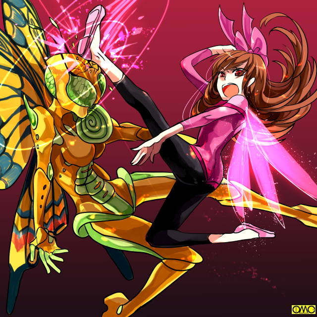

夏休みも終盤。高岩清良…否。セーラは友紀を含む数名と福真市のとある体育館に出向いていた。
セーラの姿はいつものエンジェルフォームのそれとは違う。本来の福真高校の女子制服姿。
メガネにカチューシャ。セーラータイも一年を現す白だった。
「なんであたしがこんな場所に……」
「今になって文句を言わないでよ」
しかしその友紀の言葉には申し訳なさも混じっていた。
セーラはため息をついて入り口の立て看板を見る。
「福真市新体操新人戦」と書かれたそれを。
戦乙女セーラ
ＥＰＩＳＯＤＥ３５「華麗」
スペシャルサンクス
アマッドネス原案 ＭＯＮＤＯさん
話はやや遡る。清良は夏休みというのに学校に呼び出された。
「あれ？ どうしたの。高岩君」
スクール水着姿のロングヘアの少女が呼びかける。
自分から呼びかけておいて水着姿であるのを思い出してバスタオルで胸元を隠すのが可愛らしい。
「おう。魚住。部活か？」
このロングヘアの少女は魚住美奈子。かつては魚住平という名の少年で、ピラニアマッドネスとしてセーラと戦ったこともある。
その時の影響で現在は少女となった。
「うん。秋になってもシンクロの練習はあるのよ」
水着姿を見られた羞恥心かどことなく顔が赤い。
華奢な少女は上目遣いで背の高い清良を見上げている。
「そっか。俺の方はなんか友紀が用があるってんできたけどな」
「……ふうん」
友紀の名が出た途端に態度が素っ気無くなる。
「あ。あたしもう行かなきゃ。鮎美が待っているし」
平田鮎美。かつての名は平田歩。水泳部のレギュラーをめぐって憎しみあったのだが事件で共に性転換。
そして憎悪も吹き飛ばされ現在は競泳ではなく二人で出来るシンクロナイズドスイミングに転向していた。
「おう。がんばれ」
清良はさほど興味を示さずに歩く。
「珍しいね。高岩君。休みなのに」
今度は生徒会長の高森雅だ。かつてのバットアマッドネス。
「ああ。野暮用でね」
「そうなんだ。ね。たまには生徒会室にも遊びにきてよ」
こちらも何故か顔が赤い。夏用のセーラー服。半そでとはいえど露出は美奈子よりはるかに低いのだが。
「遠慮しとく。生徒会長なら別の学校のと散々付き合っているからな」
「え。それって女の子？」
何処か咎めるような口調になっている。
「男だよ」
「そうなんだ。よかった」
「？」
なにがよかったんだ。そう思う清良だった。
「おや。夏休みだというのにどうしたんです？ 高岩くん」
メガネを光らせてロングヘアの少女が尋ねる。
今度は風紀委員の飛田翔子だった。元の名は飛田翔一。ホッパーアマッドネスだった。
憎しみ合っていた双子の兄弟は事件後に過剰に仲のよい双子姉妹へと転じた。
「呼ばれたんだよ。友紀に」
律儀に答えると冷静なはずの翔子が急に態度を硬化させる。
「それでしたらすぐに出向いた方がいいですよ。あんまり女の子を待たせない方がいいかと」
「わかったよ」
やっと目的の場所。新体操部の練習する体育館に出向く。
「あっ。高岩くーん」
黄色い声で友紀より先に声をかけてきたのは安楽千由美（元は知由）だった。
（何で休みの学校で俺が女にしたやつらばっかり会うんだよ？）
聞きようによっては危ない台詞である。
千由美はセーラ初陣の相手。スパイダーアマッドネスだった少年のその後の姿である。
「なんで安楽がここにいるんだよ？」
「新体操部の友達に呼ばれたの。１年の代表に負傷者が出て代りに出てくれないかと。でも」
付け焼刃では無理。まして「安楽千由美」は既に「二年女子」として認識されている。
だが「セーラ」は違う。考えがここに至り清良は猛烈に嫌な予感に見舞われた。
「ひょっとして……」
「あ。いたいた。キヨシーっ」
これまた高い声で友紀がポニーテールを揺らして駆け寄ってくる。
練習のはずなのに何故か本番用の華麗なレオタードを纏っていた。
一瞬はそれに心奪われるがすぐに切り替えて抗議をする清良。
「友紀。お前まさか俺に１年の代役で新体操をやれとか言うんじゃないだろうな？」
「うわ。すっごぉーい。よくわかったわねー」
確かにセーラ・フェアリーフォームなら難なくこなすだろう。
むしろセーブしないといけないほどだ。人前で飛んでしまった日には…
新体操程度ならエンジェルフォームでも問題なかった。
それを察したから猛烈に嫌な予感がしていたのだ。
「冗談じゃない。俺が何でレオタードなんて……」
ここでそのレオタードに目が行く。
（可愛い……）
それは友紀に対して抱いた思いなのかも知れない。
しかしそこで清良は衣装に対して抱いた思いと感じた。
「レオタードなんて……」
女性的なラインが美しく描き出されている。
健康的な色気。
「そんなこといわないで。どう？ 本番用なの。これ」
友紀は可愛らしくくるっと回って見せる。
「ああ……それ可愛いな」
つい口走ってしまった。事情を知らないと変質者扱いされるが変身後を友紀は知っている。
「ほんと？ それなら着てみる？ ちょうど１年の代表の子が怪我しちゃって」
「！？」
清良は頭を抱えた。失言自体にもだが男の状態でこの発言をしたことにもだ。
（……伊藤の野郎が男で貧乳を嘆いたことがあったが…俺もそれに近くなっているのか？）
覚醒して一番日が浅いもののそれでもかなりの日数が経っている。ありえる。
（考えてみれば過去に戦乙女から生まれ変わったやつらは覚醒しなかったが俺達の代で変身出来るように。例のクイーンのかけらが少しずつ減っていると言うことなのかしれねえ。だからたまに女としての思考がでるということか？）
また恐くなってきた。だから別の事を考える。
（それにしてもやられた…はめられた。わざとこれを見せて誘導したな）
と思う反面、自分が華麗に新体操の演技をするさまを脳裏に浮かべて軽くトリップ。
やはりセーラとしての乙女心が干渉し始めたらしい。
それを悟られまいと悪態をつく清良。
「し、仕方ねぇ。別にそれを着てみたかったわけじゃないぞ。困っているのを見捨てるなんざできないからな」
「ありがとー」
本当に困っていたらしく喜びを爆発させる友紀。
元々部員が少なく一年で初心者を除けば代表になれるのが一人しかいなかったのだ。
（ちゃっかりしてやがる…けどまぁ、あのファルコンの一件でやたらオレに対して「罪の意識」を持っていたみたいだがそれがなくなったという表れかもな。あれは友紀が気にする必要のないことだし）
それを見たら満更間違った選択でもなかった気になってきた。
用件が片付いたところで疑念を口にする。
「ところで安楽。今日は魚住。高森。飛田と会ってみんな態度がおかしいんだよな。やたら顔を赤くしたりなんだか焼きもちっぽい態度だったり。なんなんだろうな？ やっぱ恨まれているのかな」
「うーん。あの子達はわからないけど、あたしだったら高岩君のこと好きだからかな」
「な？」
これで驚く清良が朴念仁というのは酷であろう。
「だって…お前といいあいつらといい元々は男だろうが？」
そういう理屈である。元は男の彼女たち。ましてや敵対した自分。
恨まれるならともかく好意。ましてや恋心などありえないと。
さすがに「元・男」が恥じらいを倍化させるのか頬を赤く染め千由美は思いを吐露する。
「今は女の子だもん。そしてあたしたちを女にしてくれたのは高岩君だし。そりゃ意識もするわよ。初めての人を」
「誤解を招く発言をするなーっっっっ」
思わず体育館中に響く大声で怒鳴ってしまう。
不良のレッテルを貼られている割に律儀な清良は約束を反故にはしなかった。練習もした。だからこうしてここにいる。
同じく「部外者」の安楽千由美も事情を知るものということでサポートで同行していた。
「はぁ。もう」
数え切れないほどのため息をついているセーラ。
「ほらほら。ぼやいてないで着替えて」
「気分変えて行きましょ。女の子はスマイルが大事ですよ」
本当に明るく微笑んで見せる千由美。女になってからむしろ明るくなった。
「わかったわよ」
自宅を出る一時間前から変身している。とっくに精神状態は女子そのもの。
そのせいか友紀の態度も女友達に対するそれであった。
レオタード姿のエンジェルフォームになって試合会場に出ると凄まじい応援団がいた。
場所を間違えているとしか思えなかった。どう見ても球場のスタンドの方が相応しいガクラン集団だった。
野太い声で「あ・げ・は・ちゃーん」とコールをしている。
むしろアイドルか声優のイベント会場か（笑）
「ありがとー。みんなありがとー」
金をベースに黒いアゲハチョウ。派手なレオタードだった。
顔も派手なメイクである。マッチ棒が五本くらい乗りそうなまつげ。真っ赤な口紅。青いアイシャドウにピンクのチーク。
髪は茶色のソバージュ。ご丁寧に爪は全てネイルアートが施されていた。
女子としてはやや大柄だが派手さでちょうどよかったくらいだ。
（なにあれ？ いくらなんでもやりすぎじゃないの？）
一応は大会用ということでメイクは自由だった。セーラも女性化したらすぐにしていた。
ちなみにこれは「変装」としての意味もある。なにしろセーラのまま新体操をするのだ。
少しでも印象を変えておきたい。だから髪もカチューシャでまとめてある。それで随分とイメージが変わる。
話しを戻すととにかく郡を抜いて派手な「少女」だった。それが福真高校の面々に気がついてよってきた。
「あなたたちが福真高校の選手？」
「そうだけど」
答えるとド派手少女は値踏みするように清良たちを見る。
「地味ねぇ」
「な！？」
別に派手ならいいというわけではないがなんとなく否定された気分になる。
優越感たっぷりにその「少女」は見下した態度で言葉を紡ぐ。
「ご挨拶させていただきますわ。わたしは長野あげは。そう。アゲハチョウのように華麗な乙女」
（自分で言う？）
ナルシストぶりに辟易していた。友紀も引いている。だがそれは別の理由。
「あたしは…」
名乗られたなら返さないわけには行かない。
「引き立て役の名前なんて別にどうでもいいわ」
あげはは大して興味を持たなかった。自分の方が派手。それを確認できればそれでよかった。
「はぁ！？」
唖然とするセーラ。それを尻目に優雅に挨拶するあげは。
「わたしは他にもご挨拶があるので失礼いたしますわ」
低めのハスキーボイスで挨拶すると、若干ボリュームの足りないヒップを振りつつ立ち去る。
また新たな「得物」に対して優越感に浸りに行くのだろう。
「なにあれ？ あんなのあり？ そう思わない。友紀」
だが友紀はナルシストなところより別な理由で引いていた。
「あの子……顔の色と体の色が違いすぎるわ」
「だから厚化粧なんでしょ？ 香水もひどい匂いだったわ」
「うん。女の子のにおいじゃなかった。それにスタイルも女の子らしくなくて…」
「……それってまさか……」
ちょっと恐い考えが脳裏をよぎる。
各校の新体操部の一年生の代表が集まる大会だった。
子供のころから嗜んでいたものはさすがに上手いが、入学してから始めたような女子もいる。
さすがに練習不足が如実に現れていた。
当然ながら「高岩清良」に新体操の経験はない。
フェアリーフォームの戦い方は自然とそれに近くなっているだけだ。
だが僅かな間の特訓でそれらしい動きにはなっている。
後は超人としての身体能力にものを言わせてこなしていた。
五番目の演技でトップに立つ演技を見せていた。
「きゃーっ。凄い凄い凄いーっ」
はしゃいで抱きつく友紀。既に完全に女の精神になっているので逆に友紀に抱きついて喜ぶセーラ。
それを微笑ましく思いつつちょっと複雑な思いで見ている千由美だった。
はしゃいだのもつかの間。問題の長野あげはが演技を始めると声を失う。
女子とは思えない力強さ。名の通り蝶のように高く舞う。
それはまさに華麗と呼ぶに相応しい演技だった。
少女と思えない妖艶な色気が漂う。悪酔いしそうであった。
会場はまさに声を失う。「応援団」すら見とれていた。
全ての演技が終わる。予想通り優勝はあげはだった。
「悔しいけど、あの華麗さでは…」
代役とはいえど代表。力及ばず無念ではあるが負けを認めざるをえないセーラであった。だが
「その優勝は無効よ」
選手入り口から甲高い女声が響く。別の参加校のコーチの声だった。
さらに仰天する一言。あげはをびしっと指差し叫ぶ。
「そいつは男よ！」
蒼白になるあげは。それが図星と語っていた。
「ええっ？」
「……やっぱり」
驚くセーラと確信した友紀。最初からの女とそうでない存在の違いだろうか。
そしてにやりと笑うコーチ。つかつかと表彰台へと歩み寄る。
まるで名探偵が推理を披露するかのように説明を続ける。
「おかしいと思ったのよ。あまりにも違いすぎる顔と手の肌の色。きつい香水。派手すぎるメイクに体形」
友紀と着眼点が同じあたり女ならではの着想だったらしい。
「そして長野さん。調べさせたけどあなたの学校は一応は募集しているけど女子はいなくて実質男子校のようね」
決め手はそれだった。
「……それが……なんだっていうのよ」
否定しない。ハスキーボイスがドスの利いた感じでつぶやく。同時に
「この感触？ どこに…まさかっ？」
いつもの感触を感じていた。そしてそれを探ると発揮している人物は一番注目されている人物。
「オンナの肉体がそんなにえらいわけ？」
あげはの声が変わっていく。特有のくぐもったそれに。
「だったらこんなのはどう？ 正真正銘の女よ。人間じゃないけどね」
俯きつつ白状した。だが様子がおかしい。
「友紀。千由美。避難誘導おねがい」
それで充分だった。二人は出入り口の確保に走っていく。
セーラは影に行くとキャストオフ。さらにフェアリーフォームへと転じる。
表彰台。暴いて自分たちに有利にしようとした女コーチは異変に青くなる。
なにしろあげはの目が人の目から昆虫の複眼に変わったのだ。
「見て。あたしも蝶になれたのよ。芋虫みたいな男から、華麗な蝶に」
何処か狂気を含んだ物言いであげはが言う。変身…むしろ虫で言う「変態」が続く。
額から触角が飛び出しむき出しの手足が細い毛で覆われる。
口はストロー状のそれに変わる。そして四枚の巨大な翅。
「ひっ」
名探偵気取りの女コーチは無様に尻餅をつく。
「そう。あたしは蝶。アゲハチョウよ」
ひらひらと舞い上がる蝶の異形……パピヨンアマッドネス。
怪物出現にパニックに陥る会場。しかし友紀と千由美が出口を確保していたので脱出に問題はなかった。
それでも逃げ遅れはいる。あげはを応援していた応援団だ。そこに飛来するパピヨン。
「ねぇ？ あたしは綺麗でしょう。そういってくれたわよね」
アマッドネス特有のくぐもった声で妖艶に問い詰める。だが現実は非情。
「よ、よるな化物」
正体を知らなかったらしい。
「化物？ 随分とひどいことを言うわね。いいわ。あなたも同じになればそんなことを言わなくなるわ」
翅を振るうとりんぷんがキラキラ舞い上がる。一瞬は心奪われる応援団。
すぐにそれは苦悶の表情に変わる。毒を食らったかのように喉を掻き毟り昏倒していく。
そして次々と女へと変わっていく。
「うふふ。可愛いわよ。さぁ。あなたたちも」
効果の及ばなかった応援団員に迫る。恐怖で彼らは動けない。
「させないわっ」
牽制でのセーラの叫び声。それで動きを止めるパピヨンアマッドネス。
ゆっくりと振り返ると同じ空中にやはり翅をまとう少女がいた。
「そう。お前がアヌ様の言っていたセーラね」
単体で空を飛べるのはセーラだけである。特定は容易い。
「あたしを知っているの？」
「知っているわ。本当は男の子。あたしと同じでね」
それがスイッチだった。セーラは不意に倒した相手を次々と女に変えていたことを思い出した。
無論倒さねば犠牲者はさらに増える。だから仕方のないことだ。
だが男から一時的に変る姿が戦乙女かアマッドネスかの違い。
もしかしたら自分も敵と同じような存在なのかもしれない。
そして戦った相手に強制的に女としての人生を歩ませている。
敵としていることに違いはないのではないか。
暴力を暴力で止めているのではないか？
不意にそんな思いが募ったのは、まとめて元・アマッドネスの少女たちと顔をあわせたからかもしれない。
「面白い。どちらが華麗に舞えるか。勝負よ」
暴力を崇拝するものの一員が戦いを挑む。空中戦が始まった。
「くっ」
生じた迷いに動きが鈍いセーラ。
高空で戦った場合、相手を無事に着地させないと人に戻しても墜落しさせるというのも躊躇の理由。
友紀と千由美は避難誘導を完了させていた。
なにしろパニックに陥っている。だから誘導者の身元など気にしてない。
つまり同じ学生である彼女たちの指示に何の疑念も抱かずに従ってスムーズに退出していた。
「後は私たちだけ。行きましょう。野川さん」
「先に行ってて。私は逃げ遅れた人がいないか確認してくる」
中へと走り出す友紀。すぐに千由美もついてきた。
「安楽さん」
「ウソついてもわかるわよ。高岩君が心配なんでしょ」
図星をさされて友紀は赤面をするが隠している余裕はない。二人は走っていく。
空中戦は躊躇の分だけセーラが後手に回っていた。
それに加えて実際に新体操をしていたパピヨンアマッドネスは動きが素早い。
セーラの方は足場のない空中ではどうしても足を軸とした細かい動作が出来ず、大きな動きでよけることになる。今まではそれで充分戦えたが今度の相手には分が悪い。
さらには厄介なのが毒りんぷん。普通の人間に対するようには効かないまでも動きの自由と視界を遮るには充分だった。
遠目には二人はよく見えるが、当人にしたら煙の中で戦っているようなものである。たまらない。
友紀と千由美が見たのはまさにそんな場面。
「清良！？」
少なくとも見た目はプールで遭遇した三体のアマッドネスよりは恐ろしくない相手に、こんな苦戦をしているのは予想外だった。
「こんなことならキャロルにもきてもらうんだったわ」
新体操の大会と言うことでつれてこれず。
そして頻出地帯から外れていることから休養と留守番で高岩家に置いてきた。
そちらの方が頻出エリアだったので何かあったらセーラに連絡する担当だった。
ところが局面は逆。急行しているが友紀がプロテクターを纏うのは間に合いそうもない。
何も出来ない彼女は思わず叫ぶ。
「キ…セーラっ。その人を助けてあげてっ」
意外な一言にパピヨンアマッドネスの方が動きを止めた。
「救う？ 何の冗談だ？ この私に助けだと？」
友紀としてはほとんど考えなしに叫んだ言葉だが、後からちゃんと繋がりが出てきた。
「あなたがそんな姿になったのは心の闇に付け込まれたからでしょう。だから負けないで。弱い自分に負けたりしないで」
どうやら正鵠を射ていたらしい。激昂する。
「キサマに何がわかるっ！？」
「わかるわっ。私だってかつてはあなたと同じアマッドネスだったから」
忘れたい過去をあえて晒した。
「だからなんだ？ 私にこの素晴らしい力を捨てろというのか？」
華麗な蝶の化身は醜い憎悪を含んだ声で叫ぶ。
（そうだ。世迷言だ。あの娘の言葉が本当だとしても栄光あるアマッドネスの力をなくした愚か者。美しい蝶である私やお前と違い地を這う虫よ）
同化したはずのアマッドネス・ロウテの言葉があげはこと長野龍彦の心を再び悪へと誘う。
迷いが人としての心と悪魔としての心に分けた。
そしてセーラも迷いを振り切れなかった。普段は考えないようにしていたが今回は頭にこびりついてはなれない。
「セーラさん。あたしのことなら気にしないで」
「……千由美……」
一時は蜘蛛の化物だった少女が叫ぶ。
「あたしが取り付かれたあげく女になったのは全てあたしの心が弱かったから。だからこれは運命だと受け入れているわ」
「な、なに？
反応したのはセーラではなくパピヨンアマッドネスであった。
「貴様？ 元は男だったというのか？ アマッドネスだったというのか？」
憎悪ではない。ただ妬みに近い感情が含まれている。
それを知ってか知らずか千由美は自分に言い聞かせるように叫ぶ。
「そうよ。でも今のあたしは女として人生をやり直しているの。だからあなたも。おねがい。やり直して」
ひらひらと舞う巨大な翅。化物と言うのを忘れるほど美しい蝶の怪人が考え込んでいる。
セーラはセーラで毒りんぷんのダメージもありその場に浮かぶのが精一杯。
「ふっふっふ。そうかそうか」
妙に含みのある笑い声。「悪巧みを思いついた」というのが一番近いイメージだ。
「死ね。セーラ」
そんなパピヨンがいきなり攻撃を仕掛ける。
迷っているセーラといえど仕掛けられればかわすし、場合によっては反撃で一撃を見舞う。
段々に戦いが熱くなってきた。皮肉にもセーラに迷っている暇がなくなってきて攻撃に躊躇しなくなる。
宙に舞いつつボクシングのように打ち合う。
かつてそのファイトスタイルを「蝶のように舞い、蜂の様に刺す」と例えられたボクサーがいたが、まさに蝶そのものが戦っていた。
そして時間経過とともにセーラの体内の毒素も解毒されて動きがよくなってきた。
どうやら毒りんぷんの生成が追いつかないのかばら撒かなくなってきたのもある。
「セーラ様」
やっとキャロルが到着した。それも天馬の姿。
通常の黒猫姿ではとてもではないが間に合わない。
夏の空をいいことに白い馬体を太陽光に溶け込ませるべく空を飛んできたのだ。
「キャロル。この子を落としたら受け止めて」
セーラの躊躇はそれもあった。だがキャロルの到着で消えた。
「勝てるつもりか」
パピヨンは盛大に翅を振りやっとたまったりんぷんをばら撒く。
だがその刹那に多大な隙が出来た。
（ば、馬鹿な。こんな時に？）
融合したはずの邪悪な魂が不可解な「あげは」の行動に驚く。
そしてその隙を突きりんぷんを避けるべく上に飛んだセーラが、まるで鉄棒を回るようにくるっと一回転。
かかとをパピヨンアマッドネスの脳天に見舞う。
「ライトニングハンマー」

このイラストはＯＭＣによって作成されました。
クリエイターのハセフーコさんに感謝！
いくらセーラ・フェアリーフォームが非力で軽量でもこれはたまらない。
（ど、どうして自分から技を食らうような真似を？）
ロウテの最後の思考は爆発によって遮られた。
全裸の美少女が落下していくがキャロルが空中で受け止めた。
（ああ……またやっちゃったなぁ……）
仕方のないこととはいえどまた一人の少年の人生を女としての一生に変えてしまった。
その小さな背中に不似合いな哀愁が漂っていた…のだが。
ゆっくりと体育館の床に着地する天馬のキャロルとセーラ。
そこに駆けつける友紀と千由美。
夏場の体育イベントということでシャワーを想定してバスタオルを持参していた。
それを新しい少女の裸体を隠すために持ってきたのだ。
女になった「あげは」は当然だが化粧はしてなかった。髪も黒いストレートに。
「う…うーん」
やたらに可愛らしい高い声でうめくと「彼女」は目を覚ました。
そして意識がはっきりしたらいきなり自分の胸を掴んだ。
「ある」
明らかに歓喜を含んだ声。
「ハイ？」
間抜けな声を出してしまうセーラ。友紀。千由美。
それにはおかまいなしで今度は股間をまさぐる元・パピヨンアマッドネス。
「ないわぁ」
なんと今度は涙。それも喜びの表情。
「な…何なの？」
完全に予想外のリアクションに戸惑う三人。
「やったわ。一か八かの賭け。本当に女になれたわ」
つまりそれがアマッドネスにつけこまれた心の隙間だったのだ。
「あ…あー」
どうしていいかわからなくなったセーラ。それを無視して歓喜し続ける「あげは」
「見て。私は女よー」
一糸纏わぬ少女が両手を広げて立ち上がる。嬉し涙を流している。
「ば、ばかっ。隠して」
「女の子だって言うなら恥じらいを持ちなさい」
思わず怒鳴る友紀たち。
（今回ばかしは…罪の意識は無用だな…）
悩んでいたのが馬鹿馬鹿しくなってきたセーラであった。
後日談。
この一件で女と化した元・応援団の少女たちを取り巻きとしたあげはが歩いている。
今は戸籍上でも女で「長野あげは」が本名になっていた。
「あげはさん。どうしてそんな地味にしちゃったんですか？」
ギャルメイクの元・少年。現・少女が不思議そうに尋ねる。
今のあげはは黒髪のショートカット。ノーメイクであった。
「いらないわよ。今までは化粧で女に化けていたけど、本物になれた今はむしろ素顔をみんなに見せたいの。あたしは女なのよと」
女になることをみずから望んだ少年に取り付いたのが、ロウテという名のアマッドネスの不運であった。